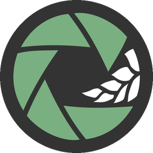

Canopeo WebDrop your downward-facing canopy photos here
— or use Load images on the right to begin.
| # | Original | Mask | Cover % | Filename | Timestamp | Lat | Lon |
|---|
Canopeo version: 1.0 (web)
Canopeo is a tool for quantifying the fraction of green canopy cover from downward-facing images. Canopeo helps users track vegetation growth, assess management practices, and support agronomic and ecological research.
Patrignani, A., & Ochsner, T. E. (2015). Canopeo: A powerful new tool for measuring fractional green canopy cover. Agronomy Journal, 107(6), 2312–2320. https://doi.org/10.2134/agronj15.0150
Andres Patrignani — Department of Agronomy — Kansas State University
Tyson E. Ochsner — Department of Plant and Soil Sciences — Oklahoma State University
For questions, bug reports, feature requests, or potential collaborations, please reach out to us at:
andrespatrignani@ksu.edu
tyson.ochsner@okstate.edu
This is a client-side web app: your images are processed entirely on your own device using your browser's Canvas APIs. Nothing is uploaded anywhere.
For best results, collect downward-facing images at approximately shoulder height with the camera pointed straight down at the canopy. Keep extraneous objects out of the frame (shoes, flags, marking stakes, soil probes) and avoid reflective leaves, which can be misclassified. Light or scattered shadows are usually not a problem; harsh shadows from your own body can be minimized by positioning yourself so that you are not between the sun and the photograph area. Clear-sky sunny days and overcast days with plenty of diffuse light typically produce the best images. Avoid early morning and evening times, which can introduce some specular reflection.
Load Images
Press to select one or more images in PNG, JPG, or JPEG format. Multiple files can be selected at once. You can also drag and drop image files directly onto the image pane on the left. The label directly below shows the number of images loaded.
Size
Resolution at which canopy cover is computed. "Original" processes images close to their native size for highest accuracy. "~1 MPx" downscales large images to about one megapixel and is recommended for large batches of high-resolution photos; the resulting canopy cover values are typically within a fraction of a percent of the full-resolution result.
Inspect images (Previous / Next)
Navigate through the loaded image list. The "Image" counter in the information panel shows your position in the list, and Previous / Next wrap around at the ends.
Ratio
Strictness of the R/G and B/G ratio constraints used to classify a pixel as green. Lower values (around 0.90) are stricter and may miss yellow-green or deeply shadowed tissue; higher values (toward 1.10) are more permissive and may pick up senescing or yellow-ish leaves. The recommended default range is 0.95–0.97 and works well across most crops and lighting conditions.
Blended opacity
Controls how the classification mask is blended onto the displayed image. A value of 0 shows only the original photo; 100 shows only the mask. Intermediate values are useful for visually verifying the classification mask.
Enable noise reduction
When checked, removes small isolated specks (typically small weeds, residue pixels with a faint green tint, or JPEG compression artifacts). The minimum cluster size scales automatically with image resolution so the same setting works whether you are processing small phone photos or large drone imagery.
Mask color
Sets the color of canopy pixels in the classification mask. Neon colors provide bright contrast for maximum visibility against typical backgrounds. "White" matches the visual style of the original 2015 Canopeo paper. "Original" preserves the source pixel colors, which is useful for inspecting whether the classification followed leaf edges correctly. Non-canopy pixels are always black. The selected color is also used in the blended JPEGs saved during batch processing.
Image information
Shows the current image's metadata: image number within the loaded list, file name, computed canopy cover percentage, capture timestamp, GPS coordinates, capture device, and processing-resolution dimensions followed by the megapixel count in parentheses. The megapixel count is color-coded as a responsiveness hint: green for less than 5 MPx (snappy), amber for 5–20 MPx (noticeable but fine), and maroon for more than 20 MPx (slider drags may lag and per-image processing may take a moment). Timestamp and GPS fields are read from the EXIF metadata embedded in the file and may show "N/A" for processed or PNG-format images that have lost their original EXIF.
Select outputs (Table / Bool Mask / Blended)
Selects which files the batch will produce. "Table" writes a CSV with one row per image containing the filename, canopy cover, GPS coordinates, timestamp, device, and processing dimensions. "Blended" writes a JPEG per image showing the source photo overlaid with the classification mask at the current opacity setting, matching what is shown on screen. "Bool Mask" writes a PNG per image where canopy pixels are white and background is black; these masks are suitable for downstream analysis or for combining with other tools. Bool Mask and Blended outputs are packaged together into a single ZIP archive. At least one option must be selected.
Process batch
Runs the classification on every loaded image using the current settings and downloads the selected outputs through your browser — there's no folder picker to set up first, since web pages can't write directly to your filesystem the way a desktop app can. The progress bar tracks completion, and the label below it shows status. Processing time depends on the image size selection and the number of images; very large images at "Original" resolution can take a second or more each.
The image shown in the main window is a downsized preview, capped at about 800 pixels on the longest side so the interface stays responsive even on very large input photos. Classification itself runs at the resolution chosen in "Size," which can be much larger, and the JPEGs/PNGs written into the output ZIP during batch processing use that full processing resolution. As a result, the saved classified and blended images may look slightly crisper than the on-screen preview, and edge pixels along leaves can differ subtly between the two due to downscaling. The canopy cover percentage reported in the sidebar and the CSV is always computed at processing resolution, never at display resolution.
This is a browser-based port of Canopeo. Everything, including image decoding, classification, and file packaging runs locally on your device. No images are ever uploaded anywhere. Because it's a Progressive Web App, you can also install it (see "Install App" in the menu bar, where supported) for an offline, app-like experience.
Canopeo
Copyright (c) 2026 Patrignani & Ochsner
Required Notice: Copyright 2026 Patrignani & Ochsner (https://soilwater.github.io/canopeo-desktop/)
Licensed under the PolyForm Noncommercial License 1.0.0.
The full text of the license follows below.
------------------------------------------------------------------
PolyForm Noncommercial License 1.0.0
<https://polyformproject.org/licenses/noncommercial/1.0.0>
# Acceptance
In order to get any license under these terms, you must agree
to them as both strict obligations and conditions to all
your licenses.
# Copyright License
The licensor grants you a copyright license for the
software to do everything you might do with the software
that would otherwise infringe the licensor's copyright
in it for any permitted purpose. However, you may
only distribute the software according to [Distribution
License](#distribution-license) and make changes or new works
based on the software according to [Changes and New Works
License](#changes-and-new-works-license).
# Distribution License
The licensor grants you an additional copyright license
to distribute copies of the software. Your license
to distribute covers distributing the software with
changes and new works permitted by [Changes and New Works
License](#changes-and-new-works-license).
# Notices
You must ensure that anyone who gets a copy of any part of
the software from you also gets a copy of these terms or the
URL for them above, as well as copies of any plain-text lines
beginning with `Required Notice:` that the licensor provided
with the software. For example:
> Required Notice: Copyright Yoyodyne, Inc. (http://example.com)
# Changes and New Works License
The licensor grants you an additional copyright license to
make changes and new works based on the software for any
permitted purpose.
# Patent License
The licensor grants you a patent license for the software that
covers patent claims the licensor can license, or becomes able
to license, that you would infringe by using the software.
# Noncommercial Purposes
Any noncommercial purpose is a permitted purpose.
# Personal Uses
Personal use for research, experiment, and testing for
the benefit of public knowledge, personal study, private
entertainment, hobby projects, amateur pursuits, or religious
observance, without any anticipated commercial application,
is use for a permitted purpose.
# Noncommercial Organizations
Use by any charitable organization, educational institution,
public research organization, public safety or health
organization, environmental protection organization,
or government institution is use for a permitted purpose
regardless of the source of funding or obligations resulting
from the funding.
# Fair Use
You may have "fair use" rights for the software under the
law. These terms do not limit them.
# No Other Rights
These terms do not allow you to sublicense or transfer any of
your licenses to anyone else, or prevent the licensor from
granting licenses to anyone else. These terms do not imply
any other licenses.
# Patent Defense
If you make any written claim that the software infringes or
contributes to infringement of any patent, your patent license
for the software granted under these terms ends immediately. If
your company makes such a claim, your patent license ends
immediately for work on behalf of your company.
# Violations
The first time you are notified in writing that you have
violated any of these terms, or done anything with the software
not covered by your licenses, your licenses can nonetheless
continue if you come into full compliance with these terms,
and take practical steps to correct past violations, within
32 days of receiving notice. Otherwise, all your licenses
end immediately.
# No Liability
***As far as the law allows, the software comes as is, without
any warranty or condition, and the licensor will not be liable
to you for any damages arising out of these terms or the use
or nature of the software, under any kind of legal claim.***
# Definitions
The **licensor** is the individual or entity offering these
terms, and the **software** is the software the licensor makes
available under these terms.
**You** refers to the individual or entity agreeing to these
terms.
**Your company** is any legal entity, sole proprietorship,
or other kind of organization that you work for, plus all
organizations that have control over, are under the control of,
or are under common control with that organization. **Control**
means ownership of substantially all the assets of an entity,
or the power to direct its management and policies by vote,
contract, or otherwise. Control can be direct or indirect.
**Your licenses** are all the licenses granted to you for the
software under these terms.
**Use** means anything you do with the software requiring one
of your licenses.